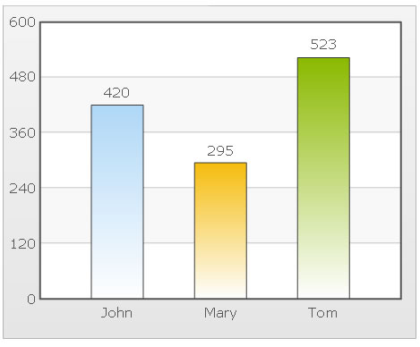

Resizing Charts in Percentage |
FusionCharts v3 allows you to resize charts in percentage too (apart from pixels). However, this method is not recommended as this method just scales the chart and doesn't redraw the chart as per the given size. For example, when you resize a chart based on percentage, all the text on chart is scaled and not re-drawn to maintain font size. Let's see an example. To set your chart to resize in percentage, you'll first need to update your HTML code as under: |
<div id="chart1div"> |
As you can see in the HTML above, we've first set the width and height of chart in percentage. The chart will now take the width and height (in percentage) available in it's parent container. For example, if it's contained directly in <BODY>, it will take 100% width and height of the entire page. If it's contained in a table, it will take 100% width and height of that table cell. Next, in our XML, you'll need to use a labelDisplay other than WRAP mode. WRAP mode would cut off the labels in percentage mode. You can use NONE, STAGGER or ROTATE mode in this label. We'll use NONE in our example, as shown below: |
| <chart baseFontSize='12' labelDisplay='NONE'> <set label='John' value='420' /> <set label='Mary' value='295' /> <set label='Tom' value='523' /> </chart> |
| When you now see the chart in browser, you'll see that the chart is absorbing 100% width and height of its parent container. Also, if you resize the browser, the chart now resizes (re-scales) along with the browser as shown below. The fonts are now rescaled and not re-drawn. |
| Chart with percentage resizing shown at a very small size. The text appear very small. To increase text size, you can use baseFontSize attribute in XML, depending on your requirements. |
|  |
| Re-scaled to a bigger size by resizing the browser. The text grows in size along with the chart size. |